休息了一天，可謂精神奕奕、神采飛揚，生龍活虎外加走路有風。
之前在中國騎車一個星期左右就能休息幾天，在哈薩克則是連續騎了二十幾天的車才換得一天的休息。
不過哈薩克旅行的時候騎乘的距離沒有中國那麼拼命，當天累積的疲勞大多都可以當天就恢復元氣，除非睡得太差。
早餐不想吃得太豪華，拿著自己的水壺去泡了700CC的熱咖啡，配上十條麵包，一百元就搞定。
邊吃早餐邊收拾行李，今天就可以抵達國境，不知道那邊看起來是什麼樣子？
猜想應該也有很多大卡車在排隊等著通關，但因為國境是24小時無休的開放，所以排隊的隊伍應該不會太長。
希望那邊可以有個邊境的小村落，有餐廳、商店和旅館，因為我得在邊境待上一天等簽證生效才有辦法通關。
要是騎到邊界發現那裡除了關卡之外，荒涼到什麼都沒有的話，那我真的會傻眼，到時就要在野外看著關卡露營兩天。
最保險的做法就是繼續在這間旅館多住一天，明天在騎去國境，這樣只需要露營一天就可以了。
但是想那麼多也沒用，不到現場實際看過怎麼會知道是什麼情形？
不同於昨天下雨下個不停的天氣，今天的天空明顯蔚藍很多，但是手錶的天氣預報則顯示下雨，所以趁著好天氣趕緊出發吧～
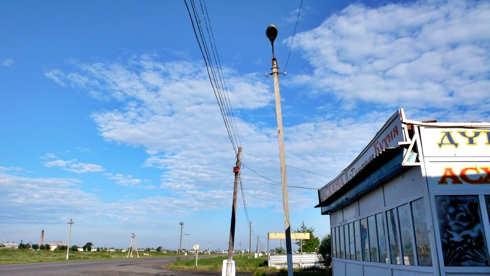
往邊境的路上左彎右拐的，很不走直線，太恍神不注意看告示牌就會迷路的唷。
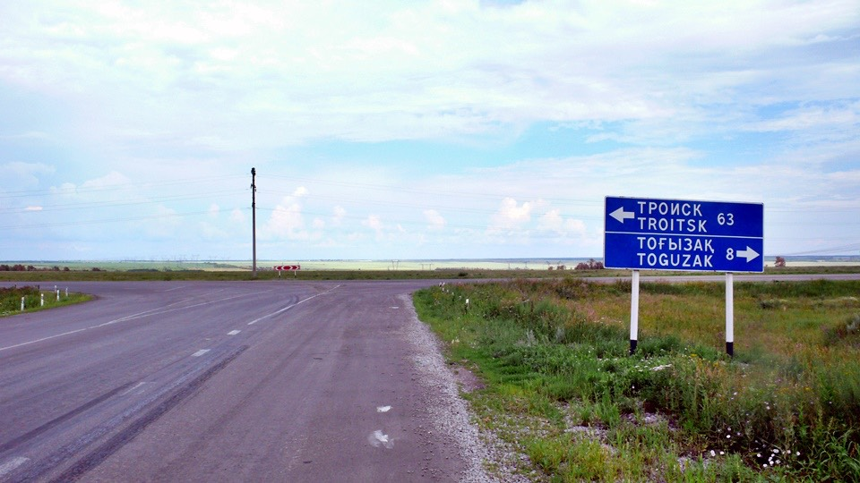
騎到快中午的時候天空中的烏雲就開始聚集，遠方的雷聲隆隆作響，看來又要下雨了。
幸好前面就是城鎮，快點騎過去找地方避一下，等雨下完再繼續騎。
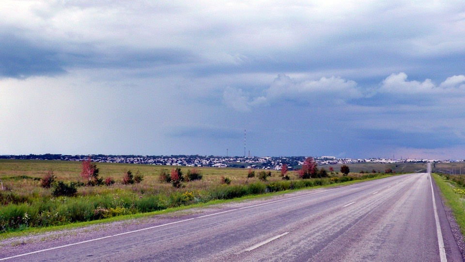
在距離加油站還有五百公尺的時候，大雨就滂沱而下，就差這麼一點點的路，還是讓我濕了半身。
躲在加油站看著大雨，配合著雨勢而下的則是正午的太陽，一邊出太陽一邊同時給我下大雨，瞬息萬變的氣候也不是這樣搞的吧。
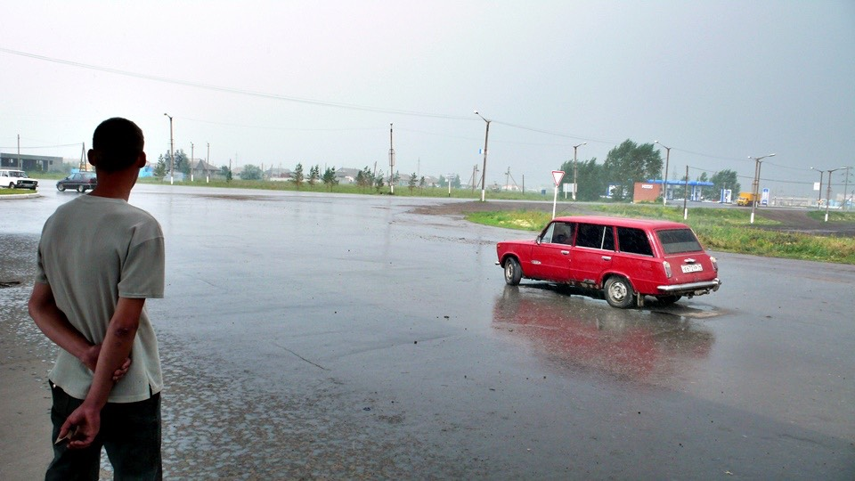
買一瓶芒果汁來喝順便欣賞雨勢，這裡好像是個不小的城鎮，等雨停再過去晃一晃。
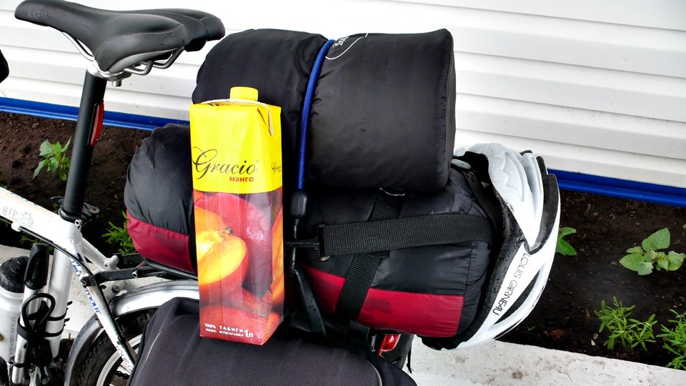
這個加油站賣的東西都很不可口，雨勢稍緩之後到城鎮裡的商店買好吃的當午餐。
剛剛大雨落下的時候，來不及躲雨的人就通通變成落湯雞了，看起來真可憐。
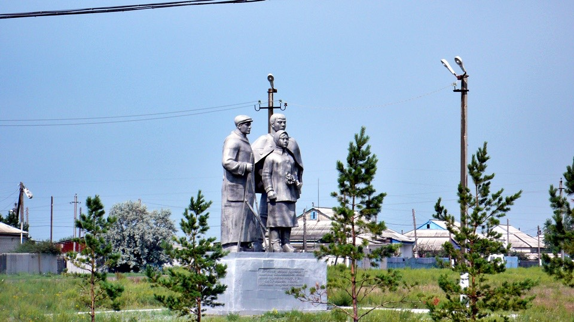
麵包在哈薩克是很便宜的主食，買餅乾糖果都要花紙鈔，買麵包只需要硬幣就可以買很多很多。
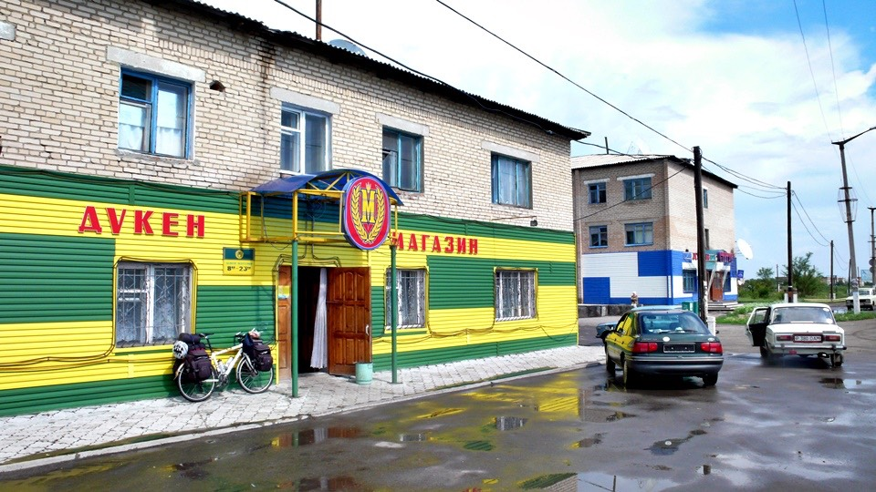
在這裡買了五個手掌麵包，花不到五十元，找回來的零錢再繼續買了兩個冰淇淋，花一百元就吃得很開心。
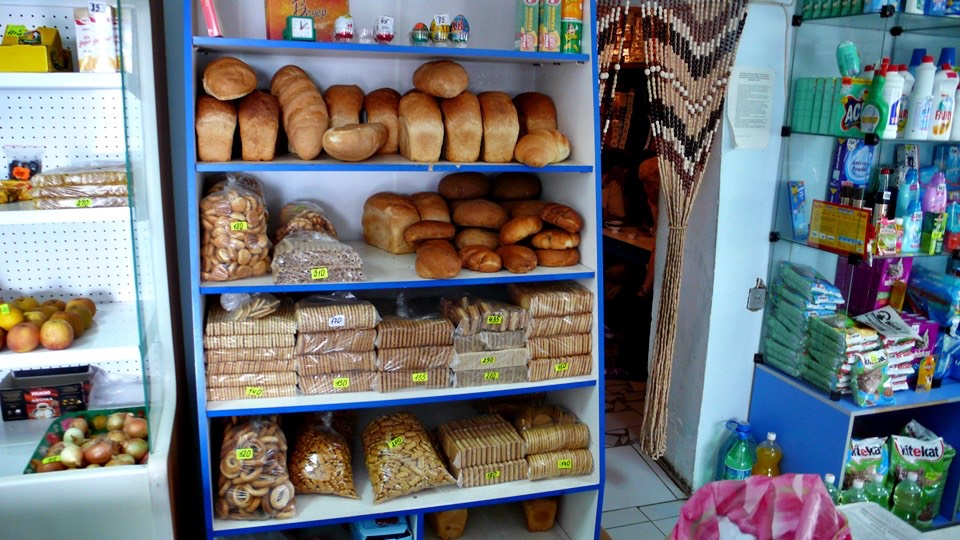
雨才剛下過，隨時可能再來一次，把握雨停的空檔，邊吃麵包邊往國境移動。
麵包吃完的時候又開始下起大雨，但是這一次就沒有地方可以躲了，戴起帽子擋雨，除了臉沒濕之外其它全身通通濕透。
觀察風勢和前方的天空，發現只要忍耐一下繼續騎，大概十公里就能脫離下雨的範圍。
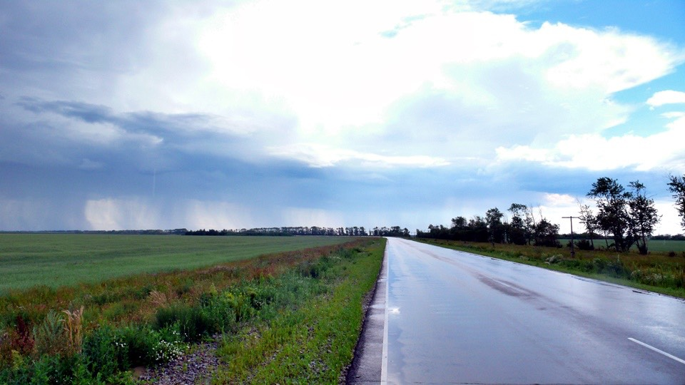
第一次對自己的天氣預報感到有信心，也真的往前騎了一段路之後，將雨雲拋在腦後。
看這個天空，非常有撥開烏雲見天日的感覺，而且這一次雨停了之後，就維持好天氣，沒有再繼續下雨。
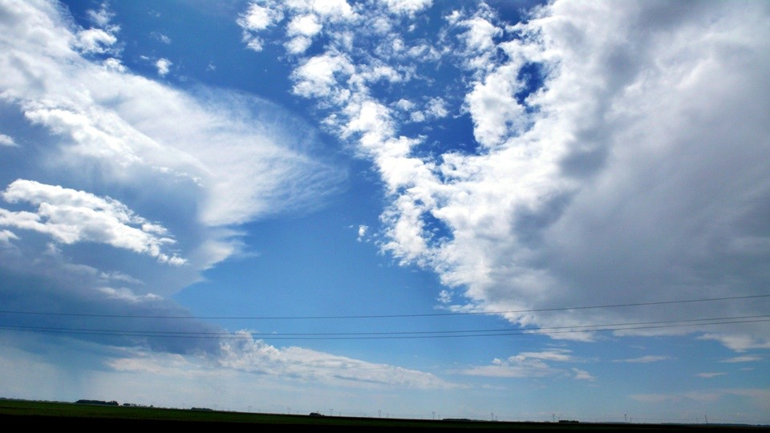
前方連路都是乾的，看起來就很舒適，而且太陽又重新出現，再次將被淋濕的我曬乾，又靠老天爺幫我洗了一次衣服。
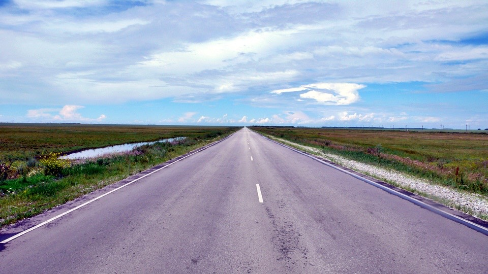
前面不遠就是國境，看來不僅要離開哈薩克了，連多變的天氣也順便一起說掰掰。
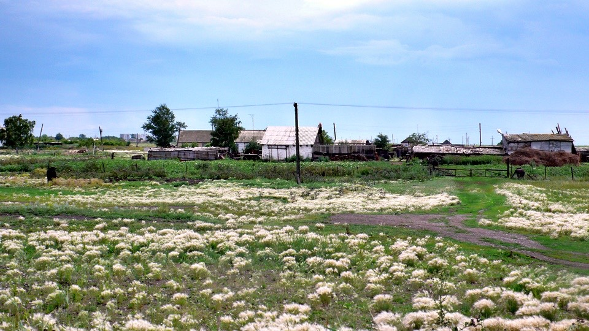
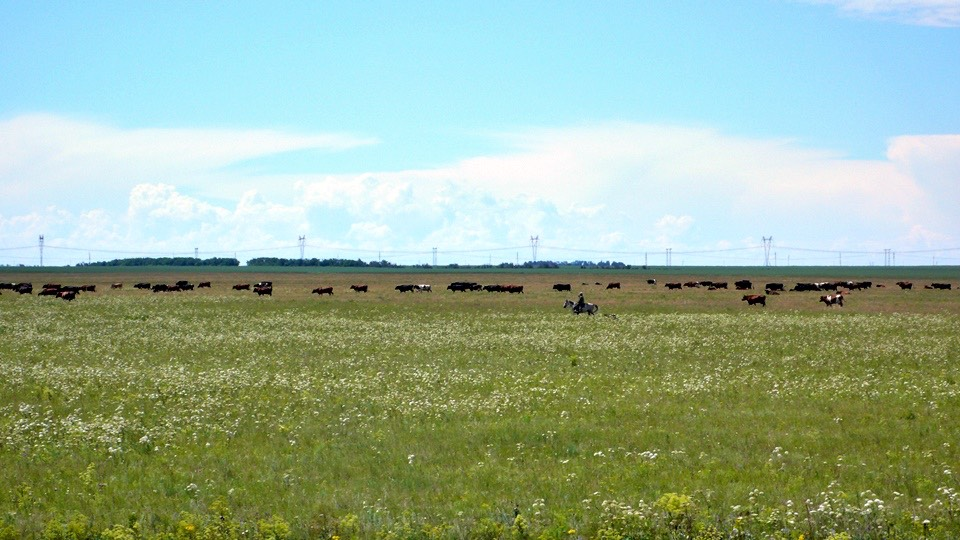
接近國境的時候就能看到遠方有大城市，這一路的告示牌所指的就是它，特羅依恣克，而它卻是俄羅斯的城市，並不是哈薩克的。
這個城市有著像是火力發電廠的紅白煙囪，冒出濃濃的白煙，猛一看很像是白雲，但卻是污染環境的廢氣。
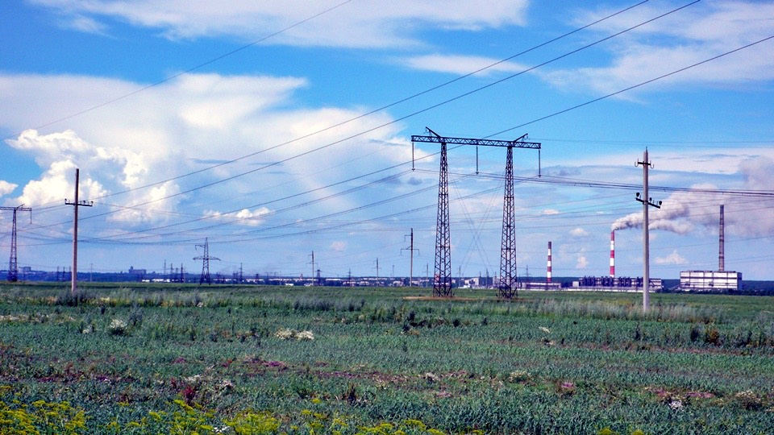
國境在下午三點的時候抵達，真的有車子在這裡排隊等著通關，可是通通不是大卡車，而是小轎車。
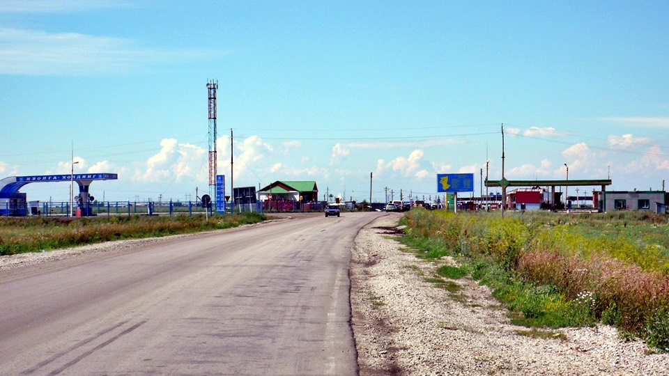
哈薩克跟俄羅斯的國境比較方便汽車通關，可以直接開過去，所以我也能直接騎著小多過去，不用像中國進入哈薩克時那樣辛苦的擠接駁車。
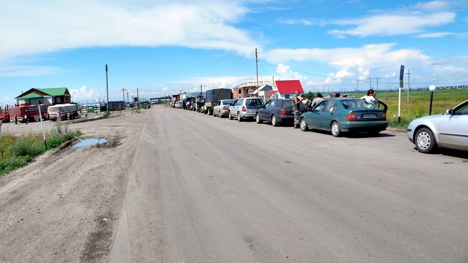
雖然還沒通關，但是手機的系統服務已經變成俄羅斯的電信業者。
這邊沒有什麼國境的城鎮，國境的另一邊則是肉眼就能看見的超大工業城市。
這裡就只有兩間加油站，幾棟給關卡人員住的建築物，零星的雜貨店和一棟獨家經營的旅館，其它就什麼都沒了。
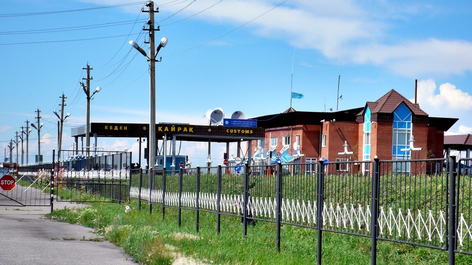
不過這些正好滿足我所有的需要，吃住都在這邊包辦，不用露營兩天那麼辛酸。
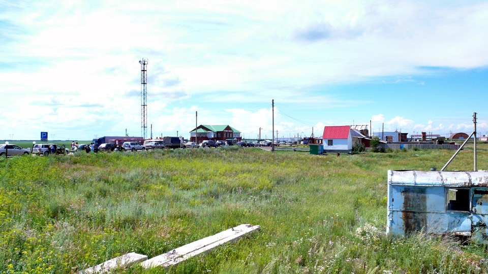
不管排隊中的車輛，直接騎到關卡處，問一下能不能通關？(當然是不行，簽證都還沒生效，我是問好玩的。)
關卡人員很有興趣的打量我並察看護照，然後如預料中的，指著俄羅斯簽證上面的21日，說這一天才能走，叫我去旅館住兩天吧。
剛剛淋雨騎車，相當程度的疲憊，淋雨所消耗的體力比在大太陽下騎車還辛苦三倍。
看著旅館就想到舒服的床鋪，但是獨家經營的優勢，不知道住一晚要多少錢？
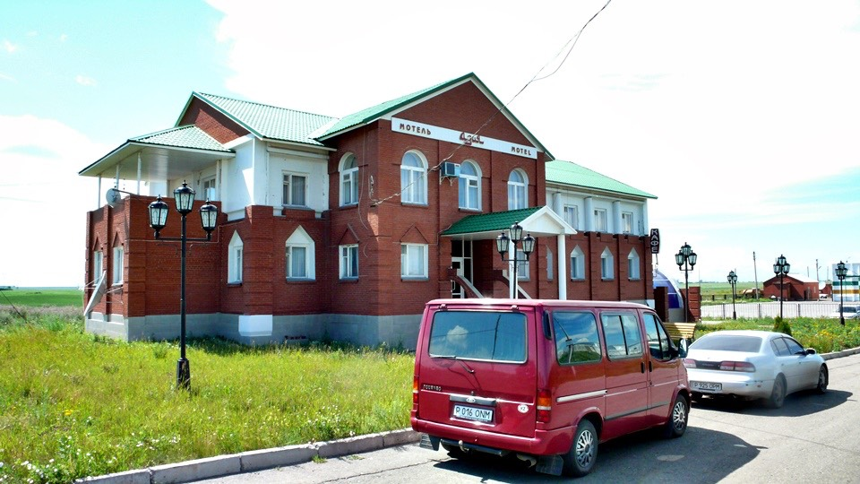
牽著小多進去問，裡頭還真是漂亮，這一棟旅館應該剛完工沒多久，房價則是兩千元一晚。
可能是剛剛我已經在心裡告訴自己住這裡一定很貴，所以當員工說出兩千元的時候，我心裡反而覺得『還好呀～沒貴到哪裡去』
但是住在這邊也是荒涼得沒有任何娛樂，跟昨天住在郊區一樣，既沒網路也沒地方好逛，又只能純休息一天。
在旅館洗過舒服的熱水澡，散步去加油站的餐廳吃點熱食，外頭的車輛還是大排長龍，但的確是可以通關的，一輛一輛慢慢的放行。
這間餐廳東西很少，想吃湯麵都沒有，只有青椒鑲肉，配上麵包、奶茶，但味道還不錯，肉餡混著米飯，口感香嫩。
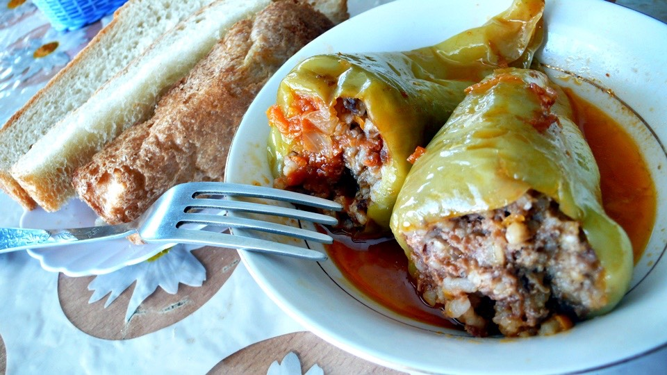
回去的時候又買了兩大瓶的果汁，這陣子真的喝太多汽水了，回想起來還真有點噁心，每天都是猛灌汽水在維持生命。
到了哈薩克之後吃的蔬菜水果好少，還好拉肚子很頻繁，正好跟便秘的問題互相抵銷。
既然蔬果不容易吃到，那我多喝一點果汁總行了吧。
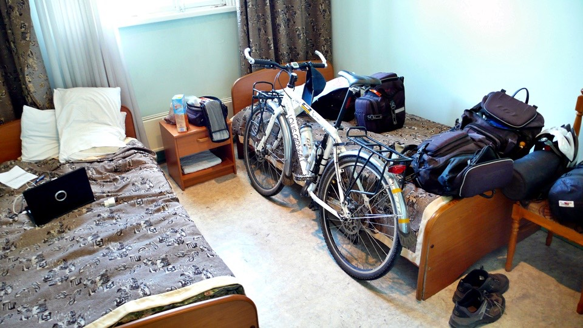
明天在這裡休息一整天，星期六想試試看一大清早五點去通關，看這個時間會比較容易放行還是會被刁難>"<
繼續閱讀：7.20 北野武的邊境
哈薩克-堅戈－ 1：0.26 台幣
7.19
總計：3101元
早餐奶茶、麵包100元、餅乾70元、加油站芒果汁185元、雜貨店麵包46元、冰淇淋50元、旅館2000元、鳳梨汁180元、柳丁汁220元、晚餐奶茶、麵包、青椒鑲肉250元